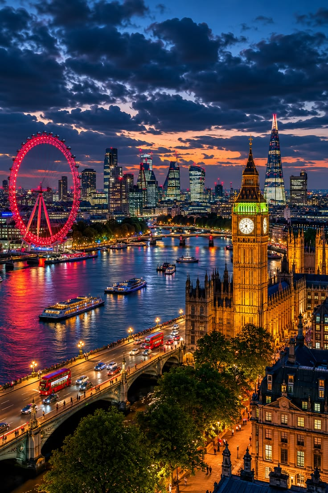

🇬🇧 Reino Unido
🇬🇧 Londres
Urbanismo sustentável, bairros criativos, mercados gastronômicos e parques urbanos. O Roteiro: Longe dos clichês da realeza, a Londres atual é vivida ao ar livre e em comunidades locais. A tendência é explorar as extensas zonas de baixa emissão de carbono a pé ou usando as frotas de transporte limpo. O roteiro inclui caminhadas por parques urbanos e canais revitalizados (como os caminhos ao redor de Hackney Wicked), visitas a mercados de pequenos produtores independentes e jantares em restaurantes comandados por novos chefs focados em desperdício zero e na fusão multicultural da cidade.
- 🌳 Hackney
- 🚲 Mobilidade sustentável
- 🍽 Gastronomia multicultural
- 🌱 Restaurantes desperdício zero